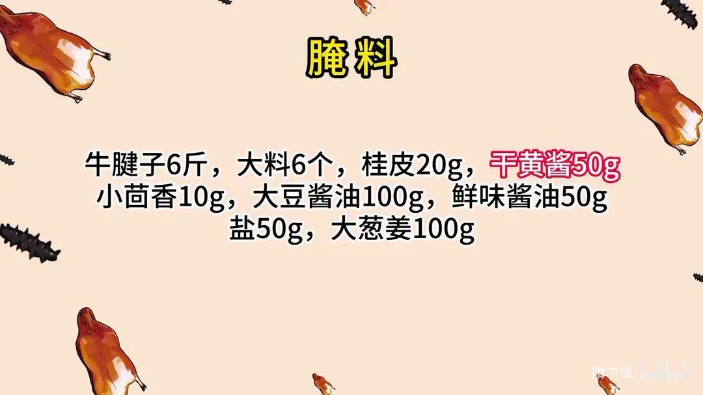
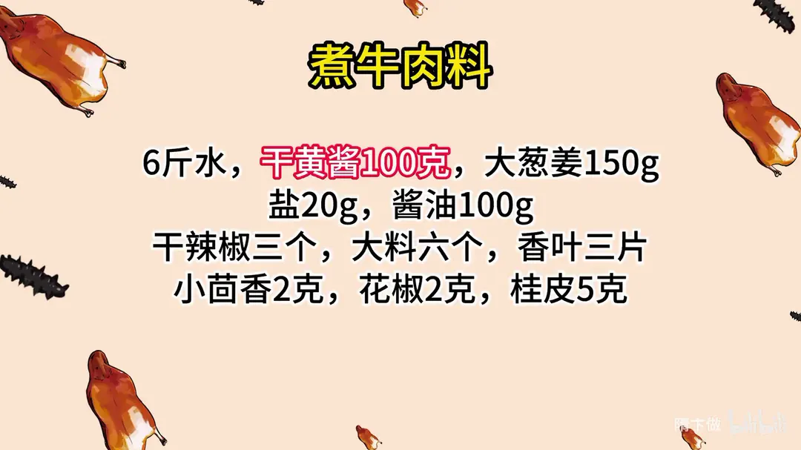
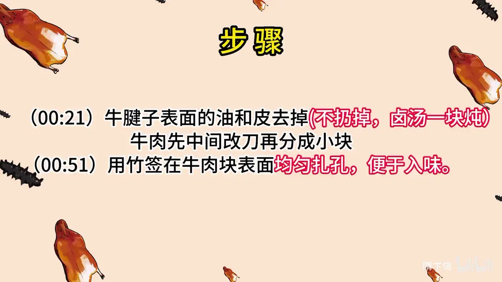
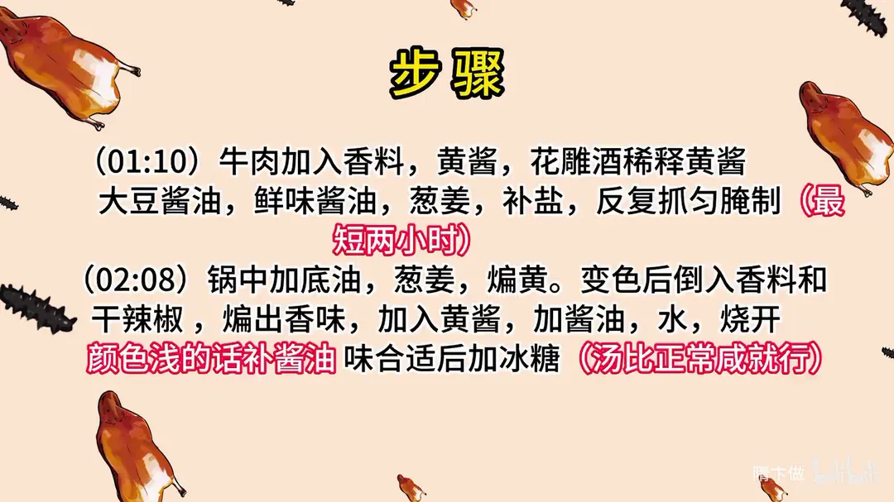
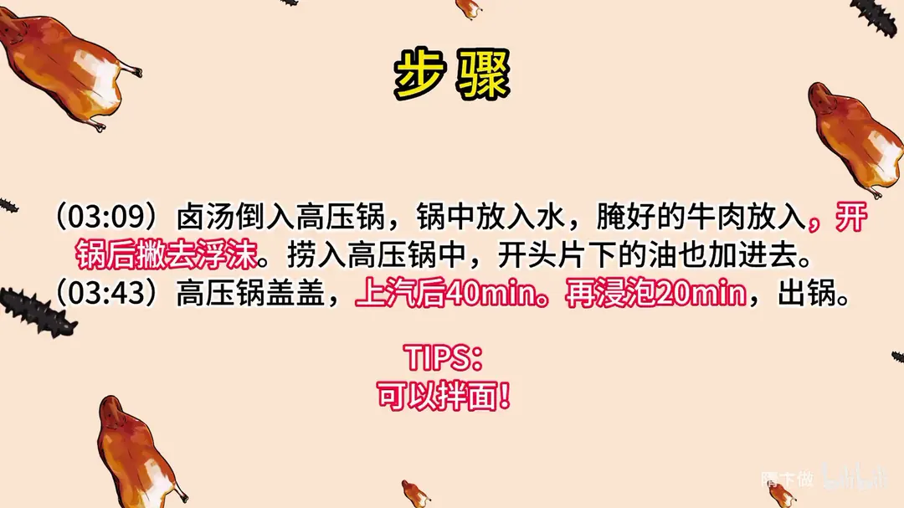

隋式酱牛肉
隋卞一做。六斤牛腱子去掉表面的油和皮，扎孔后用干黄酱、两种酱油和香料抓匀，最少腌两小时，再下黄酱卤汤，高压锅上汽 40 分钟、浸泡 20 分钟出锅。
原视频：https://www.bilibili.com/video/BV1Yu41177FD
食材
牛腱子、大料、桂皮 等 20 样
| 类别 | 用料 | 用量 |
|---|---|---|
| 主料 | 牛腱子 | 6斤 |
| 腌料 | 大料 | 6个 |
| 腌料 | 桂皮 | 20g |
| 腌料 | 干黄酱 | 50g |
| 腌料 | 小茴香 | 10g |
| 腌料 | 大豆酱油 | 100g |
| 腌料 | 鲜味酱油 | 50g |
| 腌料 | 盐 | 50g |
| 腌料 | 大葱姜 | 100g |
| 煮肉料 | 水 | 6斤 |
| 煮肉料 | 干黄酱 | 100g |
| 煮肉料 | 大葱姜 | 150g |
| 煮肉料 | 盐 | 20g |
| 煮肉料 | 酱油 | 100g |
| 煮肉料 | 干辣椒 | 三个 |
| 煮肉料 | 大料 | 六个 |
| 煮肉料 | 香叶 | 三片 |
| 煮肉料 | 小茴香 | 2g |
| 煮肉料 | 花椒 | 2g |
| 煮肉料 | 桂皮 | 5g |
步骤
- 修整：牛腱子表面的油和皮去掉，不扔掉，留着一块炖卤汤；牛肉先中间改刀再分成小块。
- 扎孔：用竹签在牛肉块表面均匀扎孔，便于入味。
- 腌制：牛肉加入香料、黄酱，先用花雕酒稀释黄酱，加大豆酱油、鲜味酱油、葱姜，补盐，反复抓匀腌制，最短两小时。
- 熬卤汤：锅中加底油，放葱姜煸黄，变色后倒入香料和干辣椒，煸出香味，加入黄酱，加酱油、水烧开；颜色浅的话补酱油，味合适后加冰糖，汤比正常咸度偏咸就行。
- 下锅卤制：卤汤倒入高压锅，锅中放入水，腌好的牛肉放入，开锅后撇去浮沫，捞入高压锅中，开头片下的油也加进去。
- 压制成菜：高压锅盖盖，上汽后 40min，再浸泡 20min，出锅。
小贴士
- 可以拌面。
讲解要点
难度：★★★☆☆（没有技术难点，耗时间：要提前腌、要守着高压锅，味道全靠腌够时间）
为什么这么做
- 牛腱子带筋最好：腱子中间那层筋酱完变成半透明胶质，又香又有口感，这是选腱子的理由。
- 表面油和皮不扔：那层油和皮一起下锅炖，汤更香厚重，别浪费。
- 扎孔是为了进味：牛肉整块纤维紧，表面扎满小孔，腌料才能进到肉里。
- 黄酱要用花雕酒先卸开：干黄酱遇酒能化开成糊，不然结块抹不匀、腌不透。
- 两种酱油搭配：大豆酱油发酵足、味道厚，但回口微苦；鲜味酱油带一点回甜，两者把苦味中和掉。
- 腌够时间才入味：饭店常图省事省掉腌制，所以外咸里没味。腌一天一夜最好，最短也要两个小时以上。
- 汤要比正常咸度偏咸：肉是泡在汤里熟的，味道进肉会被稀释，汤偏咸，肉才正好。
- 上汽 40 分钟再焖半小时：焖的过程让肉在汤里继续吸味、回软，肉要烂到拿起来颤颤巍巍才合格。
容易翻车
- 炒酱时火太大容易糊，酱油一糊整锅汤就发苦，要小火慢慢煸。
- 腌制的盐要揉到化开，盐粒没化均匀，切开来会有地方齁、有地方没味。
- 焯水时浮沫撇干净再下酱汤，否则汤会浑、腥味留在汤里。
- 凉透了再切，热的时候切容易散。
原片尾卡





原片文案
AI 字幕校准稿
现在到秋天了，教你们一点长秋膘的东西。秋天的第一杯奶茶我给不了你们，但是秋天的第一顿酱牛肉，你们要学。
选的是牛腱子，咱们拿过来处理一下。要把表面这层油，还有那薄薄的一层皮，给它去掉，但是这不能扔掉，放在一块儿一起炖就行。中间要改一刀，你看里边的花有一层筋，旁边是肉，这个做完之后，这个筋就变成那种半透明状了，就是胶质了。再分成块。
然后你们在家找点签子，给它扎一下，这样子才能入味。现在好吃的多，但这一步好多饭店都没有，是图省事，所以我们去饭店吃这些酱牛肉，它里面都不入味。
然后把香料放进去，该放什么都不用记，我会按照比例给你们放到片尾里边。放一点黄酱，倒点黄酒，把这黄酱泄一下，加上大豆酱油，然后葱姜，再放点鲜味酱油。这个大豆酱油回口会有点微微的苦味，鲜味酱油里边有微微的回甜那个味儿，大豆酱油那个微苦就压下去了。反复抓一抓，抓的时候这个牛肉会把所有的味道都吸进去。需要再补点盐，让它口重一点，揉一揉，把所有的盐都揉化。你们要腌制一天一夜，这就够味了；如果着急吃，最短也要两个小时以上。我们休息会儿。
锅里边放入底油，葱姜倒里边，这姜适当的多放一点。要把葱姜煸黄、煸出香味，变色了之后把香料倒进去，搁点干辣椒，煸出香味，然后下黄酱。这味道关键，得看着火，火一大酱就糊了。加酱油——黄酱加酱油搁锅里，自然而然它就解开了，再加水。烧开看一下颜色，颜色浅再加酱油，加冰糖，酱油有点回苦，香料边熬也会有点微微的回苦。
这个咸度怎么掌握？你尝一口这个汤，你觉得稍微有点咸了，就正好了。然后我们把汤倒在高压锅里面。
腌好的牛肉颜色已经很深了，焯水，开锅然后撇去浮沫。表面看着没有什么过多的沫子了，直接把它捞出来，放到酱汤里面，这是我们刚才片下来那油也给它放进去，这样汤也能香。高压锅盖盖，上汽之后 40 分钟。
好，牛肉时间到了，先别着急开盖，让它搁锅里再焖半小时，让这个牛肉再多吸一会儿汤的味道。又焖了半个小时，开盖。一定得炖得够烂够软，拿的时候颤颤巍巍的，凉了之后你才嚼得动。
好了，我来给你们切一块，再给你下点面条。牛肉汤也能加进去，现炸辣椒油也得有。隋氏酱牛肉，蘸汁一拌，怎么拌？搅拌一下。它没有那种很复杂的香料的味道，主要是牛肉的那股香味，然后回口有一点点的甜。
这个就是基本简单的一个教程，你要说达到很高层次不一定，但是家庭吃完全可以了。要想凉着吃，捞出来之后晾一晾，跟饭店一样，可以拿个保鲜膜卷上，卷成一个卷，放在冰箱里让它晾凉，第二天吃。这个方法特别简单，一是不复杂，二是在家方便。